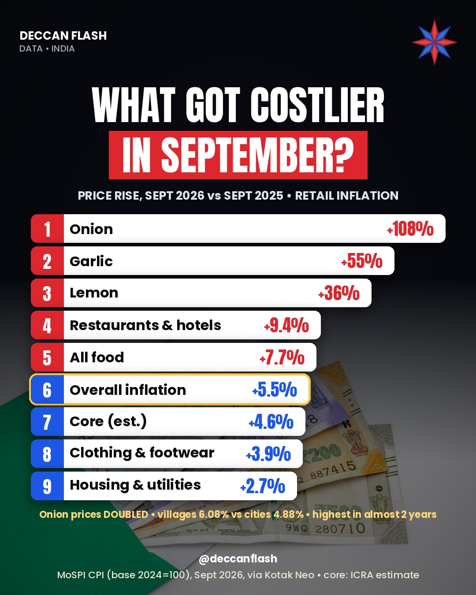

Prices · India
What got costlier in September 2026?
India's retail inflation rose to 5.54% in September 2026, up from 4.83% in August. Onion prices more than doubled in a year, and food inflation jumped to 7.74%. Prices rose faster in villages (6.08%) than in cities (4.88%).
Price rise, September 2026 vs September 2025, %
Year-on-year change in the consumer price index (CPI, base 2024=100). Overall retail inflation is highlighted.
The ranking
| # | Item | Price rise (YoY) |
|---|---|---|
| 1 | Onion | +108.09% |
| 2 | Garlic | +54.62% |
| 3 | Lemon | +36.41% |
| 4 | Restaurants & hotels | +9.36% |
| 5 | All food | +7.74% |
| 6 | Overall inflation | +5.54% |
| 7 | Clothing & footwear | +3.93% |
| 8 | Housing & utilities | +2.74% |
Housing & utilities: housing, water, electricity, gas and other fuels. Restaurants & hotels: restaurants and accommodation services. The chart image below also shows an ICRA estimate of core inflation, which is not official data.

Quick answers
What is India's retail inflation now?
5.54% in September 2026, up from 4.83% in August, according to MoSPI data released on 12 October 2026.
Why did inflation rise in September 2026?
Mainly food. Food inflation rose to 7.74% from 5.97%, led by onion (+108.09%), ginger (+62.85%), garlic (+54.62%) and lemon (+36.41%).
Is inflation above the RBI's limit?
Overall inflation (5.54%) is below the RBI's 6% upper limit, but rural inflation, at 6.08%, is above it.